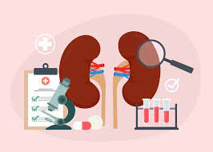

Opinión
Los riñones son muy importantes en nuestro cuerpo ya que eliminan los desechos y el exceso de líquido del cuerpo y mantienen un equilibrio saludable de agua, sales y minerales como sodio, calcio, fósforo y potasio en la sangre.
Asique sin ellos no podriamos vivir más de 4-12 días
